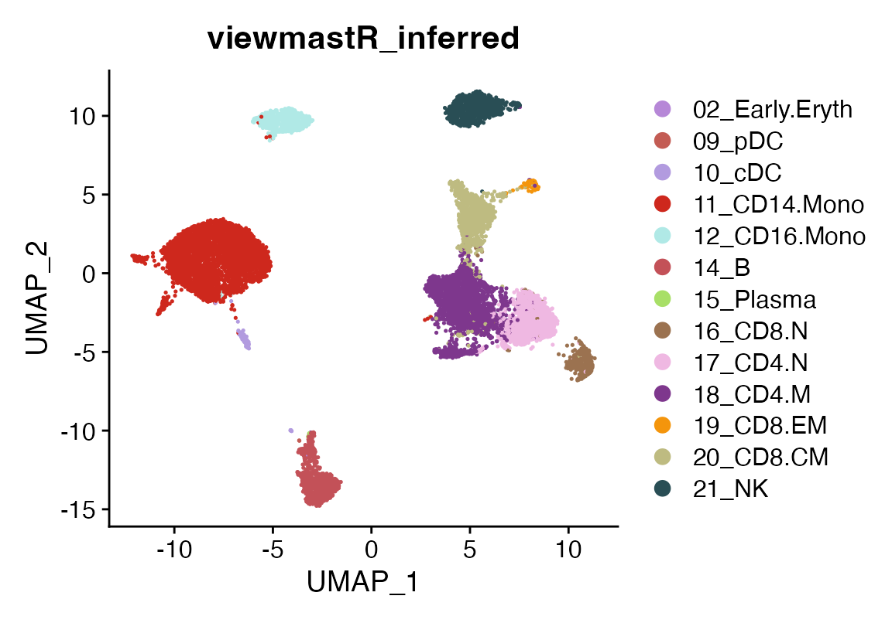
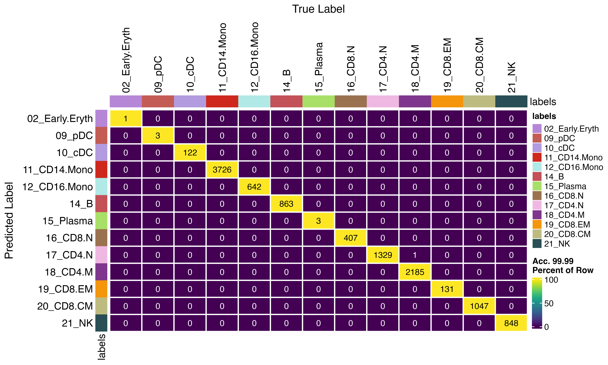

How to use viewmastR with saved models
2024-02-14
SavedModel.RmdInstalling Rust
First you need to have an updated Rust installation. Go to this site to learn how to install Rust.
Installing viewmastR
You will need to have the devtools package installed…
devtools::install_github("furlan-lab/viewmastR")Now you run viewmastR
The model path is specified using the ‘dir’ argument
seu<-viewmastR(seu, seur, ref_celldata_col = "SFClassification", selected_genes = vg, dir = "/tmp/sc_local", max_epochs = 3)Run inference
We can use the function viewmastR_infer to run inference a saved model. We will need to pass the same vector of variable features we used to initially create the model. We can use query_celldata_col to specify the name of the metadata column in the returned object. An optional vector of labels can be provided. Additionally, instead of returning the input object with predictions added, you may instead return the probabilities using the return_probs argument.
seu<-viewmastR_infer(seu, "/tmp/sc_local/model.mpk", vg, labels = levels(factor(seur$SFClassification)))
DimPlot(seu, group.by = "viewmastR_inferred", cols = seur@misc$colors)
A confusion matrix comparing the results using viewmastR to viewmastR_infer having saved the model to disc.
Open question as to why a small number of cells are different :)
confusion_matrix(pred = factor(seu$viewmastR_inferred), gt = factor(seu$viewmastR_pred), cols = seur@misc$colors)
Appendix
## R version 4.4.0 (2024-04-24)
## Platform: x86_64-apple-darwin20
## Running under: macOS Ventura 13.6.7
##
## Matrix products: default
## BLAS: /Library/Frameworks/R.framework/Versions/4.4-x86_64/Resources/lib/libRblas.0.dylib
## LAPACK: /Library/Frameworks/R.framework/Versions/4.4-x86_64/Resources/lib/libRlapack.dylib; LAPACK version 3.12.0
##
## locale:
## [1] en_US.UTF-8/en_US.UTF-8/en_US.UTF-8/C/en_US.UTF-8/en_US.UTF-8
##
## time zone: America/Los_Angeles
## tzcode source: internal
##
## attached base packages:
## [1] stats graphics grDevices utils datasets methods base
##
## other attached packages:
## [1] ggplot2_3.5.1 Seurat_5.1.0 SeuratObject_5.0.2 sp_2.1-4
## [5] viewmastR_0.2.3
##
## loaded via a namespace (and not attached):
## [1] fs_1.6.4 matrixStats_1.3.0
## [3] spatstat.sparse_3.0-3 RcppMsgPack_0.2.3
## [5] lubridate_1.9.3 httr_1.4.7
## [7] RColorBrewer_1.1-3 doParallel_1.0.17
## [9] tools_4.4.0 sctransform_0.4.1
## [11] backports_1.5.0 utf8_1.2.4
## [13] R6_2.5.1 lazyeval_0.2.2
## [15] uwot_0.2.2 GetoptLong_1.0.5
## [17] withr_3.0.0 gridExtra_2.3
## [19] scCustomize_2.1.2 progressr_0.14.0
## [21] cli_3.6.2 Biobase_2.64.0
## [23] textshaping_0.4.0 spatstat.explore_3.2-7
## [25] fastDummies_1.7.3 labeling_0.4.3
## [27] sass_0.4.9 spatstat.data_3.0-4
## [29] proxy_0.4-27 ggridges_0.5.6
## [31] pbapply_1.7-2 pkgdown_2.0.9
## [33] systemfonts_1.1.0 foreign_0.8-86
## [35] R.utils_2.12.3 parallelly_1.37.1
## [37] rstudioapi_0.16.0 generics_0.1.3
## [39] shape_1.4.6.1 ica_1.0-3
## [41] spatstat.random_3.2-3 dplyr_1.1.4
## [43] Matrix_1.7-0 ggbeeswarm_0.7.2
## [45] fansi_1.0.6 S4Vectors_0.42.0
## [47] abind_1.4-5 R.methodsS3_1.8.2
## [49] lifecycle_1.0.4 yaml_2.3.8
## [51] snakecase_0.11.1 SummarizedExperiment_1.34.0
## [53] recipes_1.1.0 SparseArray_1.4.8
## [55] Rtsne_0.17 paletteer_1.6.0
## [57] grid_4.4.0 promises_1.3.0
## [59] crayon_1.5.2 miniUI_0.1.1.1
## [61] lattice_0.22-6 cowplot_1.1.3
## [63] pillar_1.9.0 knitr_1.46
## [65] ComplexHeatmap_2.20.0 GenomicRanges_1.56.0
## [67] rjson_0.2.21 boot_1.3-30
## [69] future.apply_1.11.2 codetools_0.2-20
## [71] leiden_0.4.3.1 glue_1.7.0
## [73] data.table_1.15.4 vctrs_0.6.5
## [75] png_0.1-8 spam_2.10-0
## [77] gtable_0.3.5 rematch2_2.1.2
## [79] assertthat_0.2.1 cachem_1.1.0
## [81] gower_1.0.1 xfun_0.44
## [83] S4Arrays_1.4.1 mime_0.12
## [85] prodlim_2024.06.25 survival_3.6-4
## [87] timeDate_4041.110 SingleCellExperiment_1.26.0
## [89] iterators_1.0.14 pbmcapply_1.5.1
## [91] hardhat_1.4.0 lava_1.8.0
## [93] fitdistrplus_1.1-11 ROCR_1.0-11
## [95] ipred_0.9-15 nlme_3.1-164
## [97] RcppAnnoy_0.0.22 GenomeInfoDb_1.40.1
## [99] bslib_0.7.0 irlba_2.3.5.1
## [101] vipor_0.4.7 KernSmooth_2.23-24
## [103] rpart_4.1.23 colorspace_2.1-0
## [105] BiocGenerics_0.50.0 Hmisc_5.1-2
## [107] nnet_7.3-19 ggrastr_1.0.2
## [109] tidyselect_1.2.1 compiler_4.4.0
## [111] htmlTable_2.4.2 desc_1.4.3
## [113] DelayedArray_0.30.1 plotly_4.10.4
## [115] checkmate_2.3.1 scales_1.3.0
## [117] lmtest_0.9-40 stringr_1.5.1
## [119] digest_0.6.35 goftest_1.2-3
## [121] spatstat.utils_3.1-0 minqa_1.2.7
## [123] rmarkdown_2.27 XVector_0.44.0
## [125] htmltools_0.5.8.1 pkgconfig_2.0.3
## [127] base64enc_0.1-3 lme4_1.1-35.3
## [129] sparseMatrixStats_1.16.0 MatrixGenerics_1.16.0
## [131] highr_0.10 fastmap_1.2.0
## [133] rlang_1.1.4 GlobalOptions_0.1.2
## [135] htmlwidgets_1.6.4 UCSC.utils_1.0.0
## [137] shiny_1.8.1.1 DelayedMatrixStats_1.26.0
## [139] farver_2.1.2 jquerylib_0.1.4
## [141] zoo_1.8-12 jsonlite_1.8.8
## [143] ModelMetrics_1.2.2.2 R.oo_1.26.0
## [145] magrittr_2.0.3 Formula_1.2-5
## [147] GenomeInfoDbData_1.2.12 dotCall64_1.1-1
## [149] patchwork_1.2.0 munsell_0.5.1
## [151] Rcpp_1.0.12 reticulate_1.37.0
## [153] stringi_1.8.4 pROC_1.18.5
## [155] zlibbioc_1.50.0 MASS_7.3-60.2
## [157] plyr_1.8.9 parallel_4.4.0
## [159] listenv_0.9.1 ggrepel_0.9.5
## [161] forcats_1.0.0 deldir_2.0-4
## [163] splines_4.4.0 tensor_1.5
## [165] circlize_0.4.16 igraph_2.0.3
## [167] spatstat.geom_3.2-9 RcppHNSW_0.6.0
## [169] reshape2_1.4.4 stats4_4.4.0
## [171] evaluate_0.23 ggprism_1.0.5
## [173] nloptr_2.0.3 foreach_1.5.2
## [175] httpuv_1.6.15 RANN_2.6.1
## [177] tidyr_1.3.1 purrr_1.0.2
## [179] polyclip_1.10-6 future_1.33.2
## [181] clue_0.3-65 scattermore_1.2
## [183] janitor_2.2.0 xtable_1.8-4
## [185] monocle3_1.3.7 e1071_1.7-16
## [187] RSpectra_0.16-1 later_1.3.2
## [189] viridisLite_0.4.2 class_7.3-22
## [191] ragg_1.3.2 tibble_3.2.1
## [193] memoise_2.0.1 beeswarm_0.4.0
## [195] IRanges_2.38.0 cluster_2.1.6
## [197] timechange_0.3.0 globals_0.16.3
## [199] caret_6.0-94
getwd()## [1] "/Users/sfurla/develop/viewmastR/vignettes"